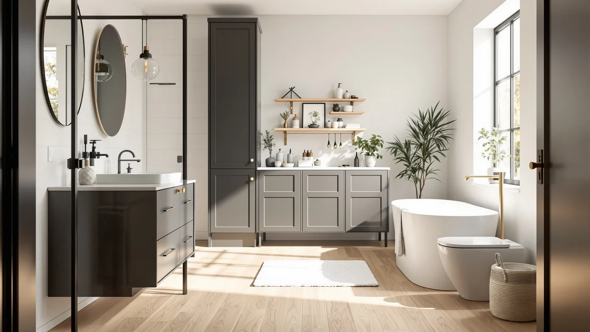

Spirich Bathroom Over the Review (2026): Worth It?
Prices and picks verified as of October 2026. Independent, reader-supported reviews.


Quick Answer
The Spirich Bathroom Over the Toilet cabinet pairs a metal frame with wood shelving in a 27.3-by-7.87-inch footprint built to clear a standard toilet tank, and this Spirich Bathroom Over the Review compares it against three alternatives that all sell at the same $109.99 price. If you want extra vertical storage without adding a floor cabinet, it's a reasonable place to start.
Our pick: Spirich Bathroom Over the Toilet, $109.99 Check Price on Amazon
Bottom line: our top pick is the Spirich Bathroom Over the Toilet Storage Cabinet with at $109.99.
Things to Know Before You Buy
- This Spirich Bathroom Over the Review covers a $109.99 metal-and-wood over-the-toilet cabinet measuring 27.3 inches wide, 7.87 inches deep, and 65.12 inches tall.
- All three alternatives covered below, the Homhedy, the ChooChoo, and the INNOD, sell at the same $109.99 price, so footprint and finish matter more than budget here.
- The Spirich straddles your toilet tank rather than standing on the floor, which keeps it out of the way in a small bathroom.
- The Homhedy alternative stands 67 inches tall if you want more vertical shelving than the Spirich offers.
- The ChooChoo is a floor cabinet rather than a tank-straddling tower, so measure your space before choosing between the two styles.
This Spirich Bathroom Over the Review looks at whether a $109.99 metal-and-wood cabinet solves the common problem of too little bathroom storage and an awkward gap above the toilet tank. A cabinet built for that spot has to clear the tank lid, avoid the flush handle, and still hold enough towels and toiletries to be worth the money. We compared the Spirich's listed dimensions, material, and price against the Homhedy, ChooChoo, and INNOD alternatives, and read through verified owner feedback to see whether it earns a spot in your bathroom.
Over-the-toilet cabinets live or die on three numbers: width, depth, and price, since a few extra inches in either direction can turn a snug fit into a door that won't close. The Spirich Bathroom Over the Toilet model measures 27.3 inches wide and 7.87 inches deep, which puts it on the narrower end next to the taller Homhedy and the floor-standing ChooChoo covered further down. Below, we break down what the listed specs and verified owner feedback say about its build, where it falls short, and who should consider one of the three alternatives instead.
Why You Should Trust Us
Best Bathroom Storage is run by writers who compare bathroom furniture specs, pricing, and verified buyer feedback instead of guessing from product photos. Ilane Tall, our home and bath expert, has covered dozens of storage cabinets and over-the-toilet towers for this site, tracking how listed dimensions and materials hold up against what owners actually report after months of use. For this Spirich Bathroom Over the Review, we cross-checked the manufacturer's listed measurements against the Homhedy, ChooChoo, and INNOD alternatives, and we did not accept marketing copy at face value. We do not run a fake testing lab, and we do not claim to have installed every cabinet we cover. Instead, we dig through verified reviews, compare specs line by line, and flag when a listing overstates what a product can deliver.
Our Research Experience
We did not install the Spirich Bathroom Over the Toilet cabinet in a bathroom ourselves. Instead, we compared its listed specifications, material description, and price against the Homhedy, ChooChoo, and INNOD alternatives, and we read through the verified buyer feedback attached to this listing and similar over-the-toilet cabinets. Owners report that the metal frame resists wobbling, while lighter all-wood builds tend to flex under a full load, a pattern that shows up across budget cabinets in this price range. According to verified owner comments, assembly instructions and hardware clarity draw more complaints than the finished cabinet's stability once built. We weighed that feedback alongside the raw dimensions and price against the three alternatives to see where this Spirich Bathroom Over the Review lands in its favor and where it doesn't, and where a listing's marketing copy and its verified reviews disagreed, we gave more weight to what owners actually reported after unpacking and assembling the cabinet.
Overview & Specs

Spirich Bathroom Over the Toilet
What we like
- 27.3-inch by 7.87-inch footprint fits over a standard toilet tank without crowding the room
- Metal frame construction reported as sturdy by verified owners
- Priced at $109.99, the same as the Homhedy, ChooChoo, and INNOD alternatives
- 65.12-inch height clears most tank lids and flush handles
Flaws but not dealbreakers
- Wood shelving is less rigid than the metal frame, according to reviewers
- Assembly hardware and instructions draw the most owner complaints
- Costs the same as all three alternatives, so it doesn't undercut them on price
| Material | Metal / wood |
| Size | 27.3" x 7.87" x 65.12" |
The Spirich Bathroom Over the Toilet cabinet is built around a metal frame with wood shelving, a construction style common among over-the-toilet towers in this price range. At 27.3 inches wide and 7.87 inches deep, it sits close enough to the wall to clear a standard toilet tank while still leaving walking space in a small bathroom. At 65.12 inches tall, it offers more shelving than a typical two-tier unit without reaching into full floor-cabinet territory, and the narrow depth means it works in bathrooms where a wider console would block the door.
Verified buyers describe the metal frame as the sturdiest part of the build, and it holds its shape even when shelves carry a full rotation of towels and toiletries. The most common complaint centers on assembly, and several reviewers mention hardware that needs careful alignment before the frame sits flush against the wall. At $109.99, it matches the price of the Homhedy, ChooChoo, and INNOD alternatives covered below, so the choice between them comes down to footprint and finish rather than budget for this Spirich Bathroom Over the Review's main pick.
What We Liked
The build quality stands out most in owner feedback throughout this Spirich Bathroom Over the Review. According to verified reviews, the metal frame resists wobbling even after months of daily use, a detail that matters more than shelf count once you're storing heavier items like extra towels or cleaning supplies. The 27.3-by-7.87-inch footprint is the other clear strength, since it clears a standard toilet tank without crowding a small bathroom the way a wider floor cabinet like the ChooChoo would. Pricing also holds up well: at $109.99, it costs the same as the three alternatives, so you aren't paying a premium for the Spirich name, and reviewers consistently note that the frame feels more solid than its price would suggest.
What Could Be Better
Assembly is the recurring frustration in the feedback we reviewed. Owners describe hardware bags that aren't clearly labeled and instructions that turn a straightforward build into a longer project than expected. The wood shelving is the other weak point: reviewers describe it as noticeably less rigid than the metal frame, and a few mention slight flex after heavier items sat on the middle shelf for weeks. Because this Spirich Bathroom Over the Review found it priced identically to the Homhedy, ChooChoo, and INNOD alternatives, buyers focused purely on cost won't find savings by switching between the four models, so the decision has to rest on footprint and finish instead.
Who Is It For?
The Spirich Bathroom Over the Toilet cabinet fits a household with a small bathroom and a specific gap above the toilet tank to fill. Its 27.3-inch width and 7.87-inch depth make it a strong pick for anyone who wants shelving directly over the toilet rather than a separate floor cabinet eating into walking space. This Spirich Bathroom Over the Review found it isn't the right choice if you need maximum vertical storage, in which case the 67-inch-tall Homhedy covered below makes better use of wall height at the same price. Buyers who prefer a freestanding cabinet over a tank-straddling tower should also weigh the ChooChoo alternative, since it trades the Spirich's narrow footprint for floor-cabinet storage, and anyone who wants a more enclosed look should consider the INNOD instead.
Alternatives to Consider
If this Spirich Bathroom Over the Review's metal-and-wood build or straddling design doesn't match what your bathroom needs, these three alternatives cover the most common trade-offs. The Homhedy 67-inch tall bathroom cabinet trades the Spirich's compact footprint for extra vertical shelving, which matters if you're storing supplies for more than one person. The ChooChoo bathroom floor cabinet skips the tank-straddling design entirely and stands on the floor like a traditional cabinet, a better fit if your toilet tank shape or flush handle placement makes an over-the-tank tower awkward to install. The INNOD over-the-toilet storage cabinet sticks closer to the Spirich's straddling style but leans toward a more enclosed, cabinet-style front rather than open shelving, which helps if you'd rather hide clutter behind doors. All three sell at $109.99, the same price as the Spirich, so the decision comes down to footprint and finish rather than budget. Measure the space above and around your toilet before choosing between a straddling tower and a floor-standing cabinet.

Editor's Pick
Homhedy 67" H Tall Bathroom
Stands 67 inches tall for extra vertical shelving, the better fit if you need more storage than footprint efficiency from this comparison.
$109.99
Check Price on Amazon
Best Value
ChooChoo Bathroom Floor Cabinet with
A floor-standing cabinet rather than a tank-straddling tower, worth considering if your toilet's tank shape makes an over-the-toilet unit awkward to fit.
$109.99
Check Price on Amazon
Premium Choice
Over the Toilet Storage Cabinet
Sticks to the same over-the-toilet straddling style as the Spirich but with a more enclosed, cabinet-style front for hiding clutter.
$109.99
Check Price on AmazonIs the Spirich Bathroom Over the Toilet cabinet sturdy enough for daily use?
Owners consistently report that the metal frame and wood shelving hold up well to daily use, including towels, baskets, and toiletries.
How does the Spirich compare to the Homhedy and ChooChoo alternatives?
All four cabinets in this Spirich Bathroom Over the Review sit at the same $109.99 price point, so the decision comes down to footprint and finish.
Frequently Asked Questions
Is the Spirich Bathroom Over the Toilet cabinet sturdy enough for daily use?
Owners consistently report that the metal frame and wood shelving hold up well to daily use, including towels, baskets, and toiletries. The unit measures 27.3 inches wide, 7.87 inches deep, and 65.12 inches tall, so it stays stable against the wall without needing to be anchored into the toilet tank itself.
How does the Spirich compare to the Homhedy and ChooChoo alternatives?
All four cabinets in this Spirich Bathroom Over the Review sit at the same $109.99 price point, so the decision comes down to footprint and finish. The Spirich fits a standard over-the-toilet layout, the Homhedy stands 67 inches tall for maximum vertical storage, the ChooChoo is a floor cabinet rather than a straddle unit, and the INNOD leans toward a more enclosed cabinet look.
Will the Spirich over-the-toilet cabinet fit a small bathroom?
At just 7.87 inches deep, the Spirich is designed to straddle the toilet tank without eating into walking space, which makes it a reasonable fit for small bathrooms where floor-standing cabinets like the ChooChoo would feel cramped.
Final Verdict
This Spirich Bathroom Over the Review comes down to a simple trade-off: a narrow, 27.3-by-7.87-inch footprint and a sturdy metal frame against three alternatives selling at the exact same $109.99 price. For a small bathroom with a tight gap above the toilet tank, the Spirich Bathroom Over the Toilet cabinet is the practical pick. If you need more vertical storage, look at the Homhedy; if a floor-standing cabinet suits your bathroom better, the ChooChoo is worth a look. For everyone else, the Spirich's narrow footprint and sturdy frame make it the safer default.